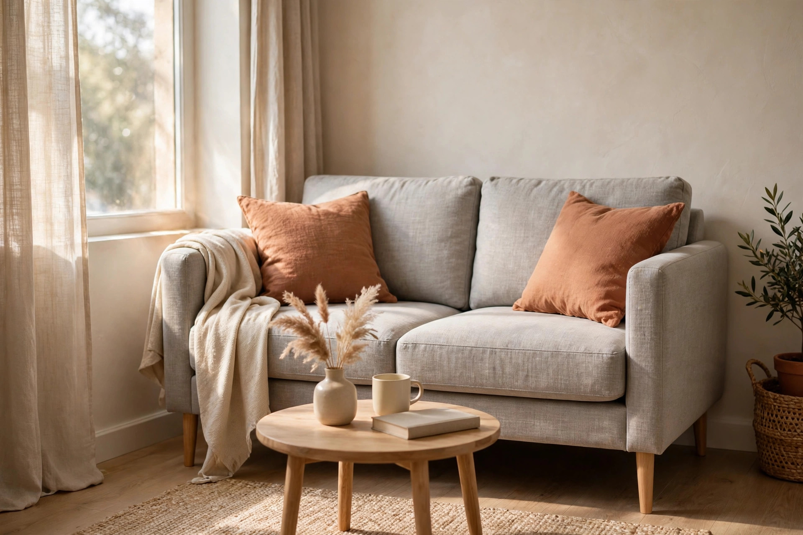

Small Living Room
Small Living Room Sofa Ideas: Best Sizes and Styles Under $300
Intro
The sofa is the biggest piece of furniture in a small living room, and the easiest one to get wrong. Too big and it eats the room; too small and nobody wants to sit on it. The trick is not to buy the cheapest sofa — it is to buy the right size first, and then worry about the price.
These 12 sofa ideas cover the sizes, shapes and styles that actually fit a small room, all under $300. Most of them are easy to find second-hand or on sale, and every one of them leaves room to walk.

1. Measure the wall first: 150–180 cm is the sweet spot — $0
A two-seater of 150–180 cm fits most small living rooms and seats two people properly. A three-seater of 200 cm or more usually crowds the room. Measure the wall, subtract 30 cm on each side, and that is your maximum sofa length.
2. A loveseat beats a three-seater — $120–$250
A loveseat seats two people, costs less, and leaves space for a chair or a side table. In a 10x12 room, a loveseat plus one armchair seats three people more comfortably than a cramped three-seater. New loveseats start around $150; second-hand ones often cost $80–$120.
3. Slim arms, not rolled arms — $150–$300
Rolled arms eat 20 cm of seating on each side. Slim, straight arms give you the same sofa length with more room to sit, and the sofa looks lighter. Track-arm sofas are the best shape for a small room.
4. Raised legs make the floor visible — $0–$20
A sofa on legs of 10–15 cm shows the floor underneath, and the room looks bigger because your eye sees the floor continue. If your sofa sits flat on the floor, add risers or swap the legs — a set of wooden legs costs $10–$20.
5. A sofa-bed for guests — $200–$300
If guests stay over, a sofa-bed does two jobs and saves the cost of a spare bed. Look for a simple pull-out or a click-clack model — the folding kind is easier to use every day than a heavy pull-out mechanism. Budget models run $200–$300.
6. Light fabric, dark cushions — $0–$30
A light-coloured sofa (grey, cream, beige) makes a small room feel open, and dark cushions add contrast without darkening the room. If you already own a dark sofa, a light throw over the back does the same job for $20–$30.
7. A corner sofa only if the room is square — $250–$300
Corner sofas look tempting, but they only work in a square room where the corner is free. In a long, narrow room, a corner sofa blocks the walkway. Measure the corner first: you need at least 200 cm on each side.
8. Second-hand first, new second — $50–$150
Sofas are one of the best second-hand buys — people move house and sell good sofas cheap. Check the frame (solid wood, no wobble), the cushions (even, not sagging) and the smell. A good second-hand sofa costs $50–$150 and leaves money for a new cover.
9. A washable cover is worth $30 — $25–$40
A loose cover or a slipcover protects the sofa and lets you change its colour for the price of a wash. In a small room the sofa is always in use, so a cover you can wash is not a luxury — it is how the sofa stays looking new.
10. No recliner in a small room — $0
A recliner needs 60 cm of space behind it to open, and it is usually too deep for a small room. A regular sofa plus a footstool gives you the same comfort, and the footstool tucks away when you do not need it.
11. Armless or one-arm styles — $150–$280
An armless loveseat or a one-arm chaise takes up less visual space and is easier to move through a narrow door. They suit small rooms because they look like seating, not like a wall of furniture. Check the seat depth — 55–60 cm is comfortable.
12. Leave 40 cm in front of the sofa — $0
Whatever sofa you buy, leave at least 40 cm between it and the coffee table, and 75 cm for the main walkway. If the sofa you love does not leave that space, it is the wrong sofa for the room — no matter how good the price is.
Conclusion — Size first, style second
If you only do three things, do these: measure the wall and buy a 150–180 cm loveseat, choose slim arms and raised legs, and leave 40 cm in front of it. Those three choices fix most sofa mistakes.
Then add a washable cover and two cushions, and stop. The right sofa in a small room is the one you barely notice — because the room works around it.
Budget recap: Loveseat: $120–$250; Second-hand sofa: $50–$150; Washable cover: $25–$40; New legs: $10–$20. Total for a sofa that fits: about $150–$300 new, or $50–$150 second-hand with a new cover.
Pinterest pin titles (3 fresh pins, same article, different designs)
- "Small Living Room Sofa Ideas Under $300 — Sizes That Actually Fit"
- "The Right Sofa Size for a Small Living Room — 12 Ideas"
- "Small Sofa, Big Comfort — 12 Ideas Under $300"